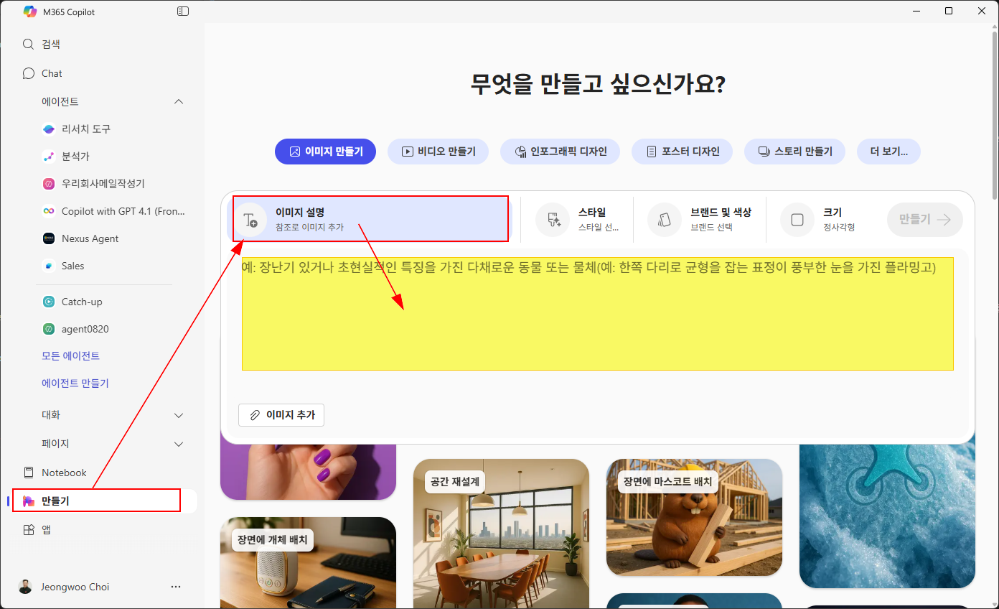

1장. 이세계로 빠지다
이번 장에서는 M365 코파일럿의 이미지 생성 기능을 사용하여, 주어진 프롬프트에 따라 네컷 만화를 생성하는 과정을 안내합니다. 아래의 단계를 따라 진행해 주세요.
Tip ▶ 기호가 있는 설명을 클릭하면 숨겨진 이미지를 열어보실 수 있습니다.
-
M365 코파일럿을 실행하여 "만들기"로 이동하십시오.

- 아래의 샘플 프롬프트를 입력합니다. [대괄호]로 싸여 있는 부분을 취향에 따라 수정하십시오. (대괄호는 지우시고요)
- [대괄호] 내용을 창의적으로 변경해보면서 마음에 들 때까지 다시 생성해 봅니다.
- 생성된 이미지를 저장하여 에 업로드 합니다.
- 채널에 업로드할 파일명은 "내이름_1장.jpeg"
샘플 프롬프트
가로세로 정방형으로 동일하게 분할된 네컷 만화. [스누피] 스타일.
**컷 1.** 금요일을 맞이한 [20대 한국인 여성, 포니테일, 안경쓴] 주인공의 장면 "나는 [Microsoft]의 [김두한], 즐거운 퇴근을 해볼까나"
**컷 2.** 갑자기 달려온 트럭에 치어서 뜻하지 않은 사고를 당하는 장면
**컷 3.** 감았던 눈을 반쯤 떠보니 나를 보고 있는 [중세기사와 공주님]들의 장면 , 1인칭 시점
**컷 4.** Copilot이라는 이름의 마법지팡이를 들고 있는 주인공의 모습 장면, "이게 무슨 일이지"
다른 동료들이 만든 작품들도 감상해 보세요:
Tip 생성된 그림안의 한글이 깨지는 것은 엔진의 성능이슈로 인한 것입니다. 한글이 아닌 영어일 때에는 정말 잘 표현됩니다. 하루빨리 한글 품질도 개선되기를 기원합니다.